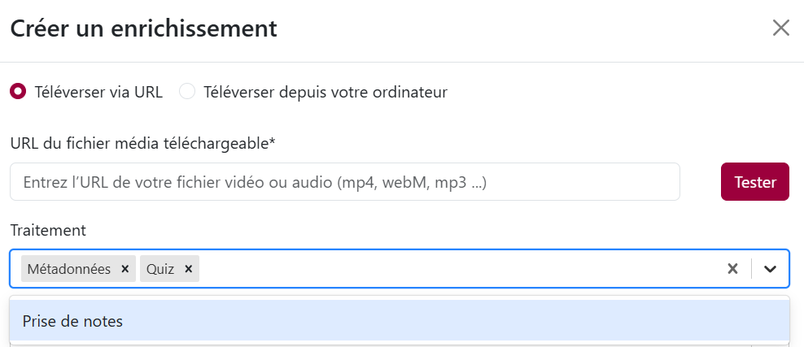
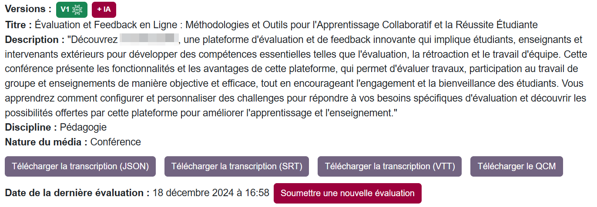
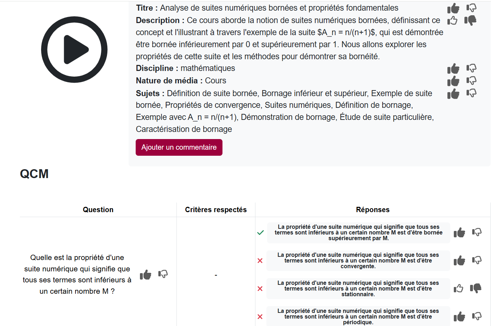

Enrichissez vos ressources pédagogiques avec AristoQuiz
Le portail AristoQuiz vous permet d’importer des vidéos et audios de cours, conférence ou réunion, pour en enrichir le contenu.
Pour créer des enrichissements avec AristoQuiz, connectez-vous sur https://portail.aristote.education/ avec la fédération d’identité et choisissez « Créer un enregistrement »
Vous pouvez choisir d’importer directement un fichier audio ou vidéo depuis votre ordinateur, ou de fournir à Aristote le lien vers un fichier téléchargeable, puis choisir le type de traitement que vous souhaitez obtenir pour commencer le traitement de l’enrichissement. Deux usages sont actuellement disponibles :
- Génération de métadonnées et Quiz
- Prise de notes

Complétez vos ressources avec les métadonnées et transcriptions
Générez automatiquement des métadonnées qui viendront compléter votre vidéo ou audio de cours : titre, description, discipline, nature du média, sujets abordés, ...
Obtenez également des sous-titres pour votre contenu vidéo ou audio : Aristote génère des sous-titre dans la langue d’origine de la ressource, les traduit si la demande a été faite lors de la création de l’enrichissement, et met à votre disposition des fichiers téléchargeables, synchronisés avec votre ressource, et que vous pouvez importer dans vos outils de lecture de vidéo.

Générez automatiquement des quiz pour l’évaluation et l’auto-évaluation de vos élèves
Avec le traitement « Quiz », Aristote génère un ensemble de questions à choix multiples issues du contenu de votre fichier, pour fournir à vos élèves un support d’auto-évaluation.
Ces quiz sont modifiables (ajout/suppression/modification de questions), et exportables pour une exploitation dans une plateforme d’apprentissage en ligne (comme Moodle)
Générez des comptes-rendus de réunion
En choisissant le type de traitement « Prise de notes », vous pouvez demander à Aristote générer une prise de notes et un compte-rendu pour un enregistrement audio ou vidéo de réunion.
Conservez le contrôle sur les contenus générés par AristoQuiz : évaluez, modifiez et complétez les propositions de l’IA
Chaque contenu généré par AristoQuiz est conçu pour pouvoir être contrôlé et modifié par l’intervention des enseignants :
- Participez à l’éducation d’Aristote en évaluant le contenu proposé par l’IA grâce à notre système de notation (positif/négatif) ou en ajoutant un commentaire pour développer votre évaluation
- Editez les métadonnées, les prises de notes et compte-rendu de réunion directement depuis le portail
- Editez, ajoutez ou supprimez des questions dans les QCM générés par Aristote
- Générez plusieurs versions de chaque enrichissement

Confidentialité et sécurité des données
- Hébergement sur serveurs souverains : Aristote est hébergé sur des serveurs souverains loués et exploités par CentraleSupélec chez OVH, garantissant ainsi la confidentialité et la protection de vos données.
- Traitement et suppression des fichiers : Lorsque vous transmettez un fichier vidéo ou audio à Aristote, il n'en conserve une copie que le temps nécessaire pour le transcrire en texte. Une fois le traitement terminé, l'URL du fichier et le fichier lui-même sont supprimés et aucune sauvegarde n'est réalisée.
- Suppression des enrichissements : Les fichiers contenant les enrichissements générés par Aristote sont supprimés dès que vous en faites la demande via l'interface utilisateur de votre application (un bouton "Supprimer" doit vous être proposé). Attention, une fois supprimés, il n'est plus possible de regénérer d'autres enrichissements, car la transcription du fichier a été effacée. Il est donc conseillé de ne cliquer sur le bouton "Supprimer" qu'une fois que vous n'avez plus besoin de regénérer des enrichissements.
- Protection des données personnelles : Aristote ne reçoit pas de données personnelles de votre part. L'identifiant de l'utilisateur est anonymisé et utilisé uniquement à des fins statistiques pour mesurer l'impact (nombre d'utilisateurs finaux de la plateforme).
- Pas de restriction d'usage des contenus générés : Vous restez maître de l'usage des contenus générés par Aristote.
- Transparence du code : Le code d'Aristote est consultable sur https://github.com/CentraleSupelec, assurant ainsi une transparence totale sur son fonctionnement et son développement.